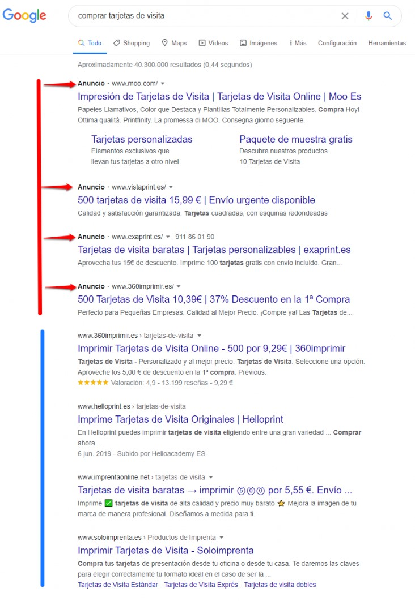
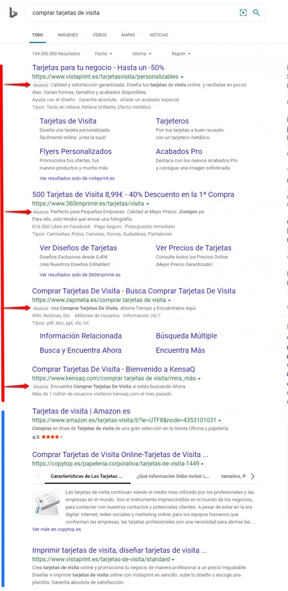

Fase 4 - Media Queries y SEO
Universidad Nacional Abierta y a Distancia - UNAD
El SEO es el arte y la ciencia de persuadir a los motores de búsqueda como Google, Bing y Yahoo, para que recomienden tu contenido a sus usuarios como la mejor solución a sus problemas.
Si quieres que los motores de búsqueda ofrezcan tu contenido en resultados, debes hacer tres cosas:
1. Asegúrate de que estos motores de búsqueda entiendan quién eres y qué ofreces.
2. Convéncelos de que eres la opción más fiable para sus usuarios.
3. Haz que tu contenido se pueda distribuir.
Tu posicionamiento en el ranking y la frecuencia con la que apareces se basa en tus méritos, los motores de búsqueda mostrarán los resultados que consideran más adecuados para sus usuarios.
La optimización para motores de búsqueda (SEO) te trae el tráfico más valioso (también conocido como tráfico orgánico), que es "gratuito": cuando un motor de búsqueda muestra tu contenido a sus usuarios en la parte orgánica de la SERP (página de resultados del buscador), no pagas por esa posición.
En esta misma SERP, a menudo hay resultados de pago; puedes identificarlos por el ícono "Anuncio" a la izquierda.
Cuando un usuario hace clic en un resultado de pago y visita el sitio, el anunciante paga al motor de búsqueda por esa visita.
Ejemplo con Google como motor de búsqueda:
Mismo ejemplo con Bing como motor de búsqueda:
Al contrario que en los anuncios, en los que debes pagar si quieres que se te posicione en primer lugar o en los primeros resultados, con los resultados de búsqueda orgánicos ("resultados SEO", si lo prefieres) puedes lograr esto mismo gracias a tus méritos y de forma gratuita.
La gran ventaja del tráfico SEO es que, si la estrategia elegida para la optimización de motor de búsqueda es efectiva (y veremos cómo lograrlo a continuación), entonces es una fuente continua de tráfico gratuito.
El objetivo fundamental de los motores de búsqueda es satisfacer a sus usuarios.
Cuando alguien usa un motor de búsqueda, como Google, Bing o Yahoo, está buscando la solución a un problema o la respuesta a una pregunta y estos motores quieren proporcionar la respuesta o solución más útil, relevante y creíble.
En SEO, a menudo nos referimos a "palabras clave" y esto es un poco engañoso. "Consultas de búsqueda" es un término mucho mejor.
No tratamos con palabras individuales, tratamos con combinaciones de palabras que expresan un problema o una pregunta.